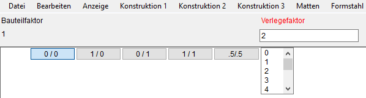

")

Beim Ändern einer Verlegung werden nacheinander alle Parameter abgefragt. Die Vorgabewerte entsprechen der aktuellen Einstellung.
1.Biegeform für die Verlegung wählen
§Klicken Sie einen Durchmesser der Verlegegruppe an, bei der Änderungen vorgenommen werden sollen. [Welche Gruppe?].
2.Durchmesser und Abstand bzw. Anzahl angeben
Stababstand bzw. Anzahl der Stäbe können automatisch anhand des erforderlichen Stahlquerschnittes (erf.as(cm²/m bzw. erf.As(cm²)) und des gewählten Stabdurchmessers ermittelt werden.
|
Hinweis: |
|
Bei der Formstahlverlegung wird nach Eingabe der Verlegebereichslänge der wahre Abstand zwischen den Stäben ermittelt. Wird dabei der zulässige Mindestabstand unterschritten, werden Sie durch eine Meldung darauf hingewiesen. Ergänzende Hinweise unterstützen Sie bei der Problemlösung. Wenn Sie die Meldung ignorieren, können Sie auch mit den gewählten Einstellungen weiterarbeiten. |

§Wählen Sie die gewünschte Berechnungsart oder übernehmen Sie die Werte aus einer vorhandenen Verlegung (Schaltflächen unter erf.As(cm²/m)):
|
Berechnet automatisch den Stababstand für den pro Meter erforderlichen Stahlquerschnitt (erf.as(cm²/m). Das Resultat kann sofort übernommen oder individuell angepasst werden. Der resultierende Stahlquerschnitt wird zum Vergleich angezeigt [vorh.As(cm²)]. Hinweis: Die Angabe des erforderlichen Stahlquerschnittes ist optional. Wird kein Wert oder 0 angegeben, muss der Abstand der Stäbe im Folgenden versuchsweise eingegeben werden, bis der resultierende Stahlquerschnitt [vorh.As(cm²)] den gewünschten Wert hat. |
|
Berechnet automatisch die für den erforderlichen Stahlquerschnitt (erf.As(cm²)) benötigte Mindestanzahl der Stäbe. Das Resultat kann sofort übernommen oder individuell angepasst werden. Der resultierende Stahlquerschnitt wird zum Vergleich angezeigt [vorh.As(cm²)]. Hinweis: Die Angabe von erf.As(cm²) ist optional. Wird kein Wert oder 0 angegeben, muss die Anzahl der Stäbe im Folgenden versuchsweise eingegeben werden, bis der resultierende Stahlquerschnitt [vorh.As(cm²)] den gewünschten Wert hat. An der Positionierung wird auch der nominelle Abstand angeschrieben. |
Übernahme des Durchmessers, Abstands bzw. der Anzahl aus einer vorhandenen Verlegung. [So wie welche Verlegung?]. Klicken Sie die Verlegung an, deren Werte Sie übernehmen möchten. Je nach Berechnungsart wird Abstand oder Anzahl aktiviert. Die Abfrage wechselt zu [KOR?] (s. weiter unten). |


§Geben Sie den erforderlichen Stahlquerschnitt ein und bestätigen Sie die Angabe [erf.As(cm²/m) bzw. erf.As(cm²)].
§Wählen Sie in der Liste unter ø per Mausklick den Stabdurchmesser.
Wenn der erforderliche Stahlquerschnitt eingegeben wurde, berechnet ISBCAD automatisch den bestmöglichen Wert für den Abstand bzw. die Stabanzahl und schlägt diesen unter Abstand(>0) bzw. Anzahl(>=1)) vor. Der resultierende Stahlquerschnitt wird unter vorh.As(cm²/m) angezeigt.
Weicht der an dieser Stelle angegebene Durchmesser von dem ursprünglich angegebenen ab, können die Hakenlängen der Biegeform nach dem Bestätigen der letzten Abfrage an den neuen Durchmesser angepasst werden. Sie erhalten in diesem Fall eine Meldung.
§Wenn der resultierende Stahlquerschnitt vorh.As(cm²/m) größer/gleich dem erforderlichen Stahlquerschnitt erf.As(cm²/m) ist, können Sie den Wert für Abstand(>0) bzw. Anzahl(>=1) bestätigen.
Alternativ können Sie einen anderen Wert angeben (und bestätigen) und den resultierenden Stahlquerschnitt vorh.As(cm²/m) prüfen.
§Prüfen Sie, ob das Resultat Ihren Anforderungen entspricht.
Wollen Sie die Angaben ändern. [KOR]?
|
Korrigieren Sie Ihre Angaben beginnend mit erf.As(cm²/m) (erforderlicher Stahlquerschnitt) oder verwenden Sie |
|
Der resultierende Stahlquerschnitt wird beibehalten. |

 (untere Menüleiste).
(untere Menüleiste).
3.Darstellung anpassen
Sie können die Darstellung der Staffel individuell anpassen oder eine vorgegebene Form auswählen. Die Darstellungsoption stehen Ihnen bis zur Bestätigung des Verlegefaktors zur Verfügung. [Verlegefaktor].
Um die Darstellung der Verlegestaffel anzupassen §Wählen Sie im Funktionsbereich eine Darstellungsoption.
Eine weitere Möglichkeit besteht darin, die Stäbe der Verlegung mittels der Option beliebige D. auszuwählen, die gezeichnet werden sollen. |


Alle an |
Alle Stäbe werden wieder dargestellt. |
Alle aus |
Es werden alle Stäbe außer dem ersten und dem letzten ausgeblendet. |
umkehren |
Die Auswahl wird umgekehrt. Wenn viele Stäbe in einer Verlegung liegen, klicken Sie nur die an, die sichtbar sein sollen. Durch das Umkehren werden dann alle nicht angeklickten Stäbe markiert. Der erste und der letzte Stab werden immer dargestellt. |
§Bestätigen Sie die Darstellung mit Rechtsklick oder  .
.
Um die Verlegestaffel zu bearbeiten und auszurichten Nachdem Sie einen Verlegebereich definiert haben und während die Abfrage des Verlegefaktors aktiv ist, können Sie die Darstellung der Verlegung ändern.  Anfang und Ende der Verlegestaffel bearbeitenDiese Optionen stehen erst zur Verfügung, wenn der Durchmesser und der Abstand angegeben wurden. [Ø ab/n].
|